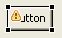

The visual editor generates and parses Java code as you design
your visual class. The visual editor uses a particular style for its generated
Java code, and it has rules for parsing Java code.
The visual editor for Java generates valid Java code that can be properly
compiled and run. In addition, when the visual editor parses existing Java
code, it uses rules to determine which elements of the code to try to visualize
in the Design view.
Rules for parsing code for display on the Design view
The visual editor for Java attempts to visualize code in the Design view
if the code meets
any of the following criteria:
There are other requirements that the visual editor checks for before visualizing
a component on the graphical Design view:
- Fields must be instantiated within a get method, or the
bean must be initialized by an initialization method that is listed on the
Pattern Styles tab of the visual editor Preferences page.
- There must not be a compilation error on the line.
- A class must be valid to load and instantiate.
- Most array initialization expressions cannot be evaluated.
- Complex arguments for a method can be understood as long as the entities
making up the argument are modeled. For example, an expression involving string
concatenation using the + operand will be evaluated properly in most cases.
Most expressions are successfully parsed, but not all expressions can be
correctly evaluated. In this case a warning sign will be shown against the
Java bean in the views, and the reason for the failure will be shown in the
status line when the bean is selected on the Design view or Java Beans view.
A warning icon also displays on the canvas:

Code generated by the visual editor
- The visual editor generates default constructors that call the method initialize(),
which sets the values of the properties for the class.
- For applets, the code to set the initial property values is called init().
This is not called by the constructor, as it will be executed by the applet
browser itself.
- Optional: You can specify that the visual editor generate try{}catch() blocks
for components. This will continuously catch every exception thrown during
initialization, and the risk of exceptions being suppressed could increase.
Therefore, it is better to let the exception pass through instead. You can
select this option on the Code Generation tab of the visual editor preferences
().
The following code shows a JPanel initialized with the try{}catch() block:
private JPanel getJPanel1() {
if (jPanel1 == null) {
try {
jPanel1 = new JPanel();
}
catch (java.lang.Throwable e) {
// TODO: Something
}
}
return jPanel1;
}
The following code shows a JPanel without the try{}catch() block
of code:private JPanel getJPanel() {
if (jPanel == null) {
jPanel = new JPanel();
}
return jPanel;
}
- Optional: You can also specify that the visual editor add a comment
marking each expression that it generates. This could be useful for distinguishing
hand-written code from generated code. The following line of code is an example
of what the comment looks like:
this.add(getJPanel(), null); // Generated
To
turn on this option, select the Generate a comment for new expressions check
box on the on the Code Generation tab of the visual editor preferences.
- For Swing/AWT, although the visual editor generates methods such as getPanel() that
instantiate and return a single Java bean, this is not a requirement. A
method can instantiate more than one Java bean, and the return value of the
method is not important for recognizing whether the field is a Java bean. For
the fields anOKButton and ivjTableModel to
be included as Java beans, they will need to be instantiated within a get method
in the class.
- For SWT, the visual editor generates private void createComposite() methods
for every class extending Composite, and any children beans are initialized
within the same method.
- If the edited class extends a Java bean, the instance being edited is
represented with a special Java bean called a 'this' part. The 'this' part
cannot be deleted from the Design view or Java Beans view, and the initialization
method for its properties are done in the initialize() method.
A 'this' part is only shown in the Design view and Java Beans view if there
are any properties that are available to set on the Properties view. The set
methods for the properties are generated in the initialize() method,
or if the class extends java.awt.Applet the init() method
is used.
- If the edited class implements org.eclipse.ui.IWorkbenchPart, the generated
code for the child controls are added to the createPartControl(Composite parent)
method.